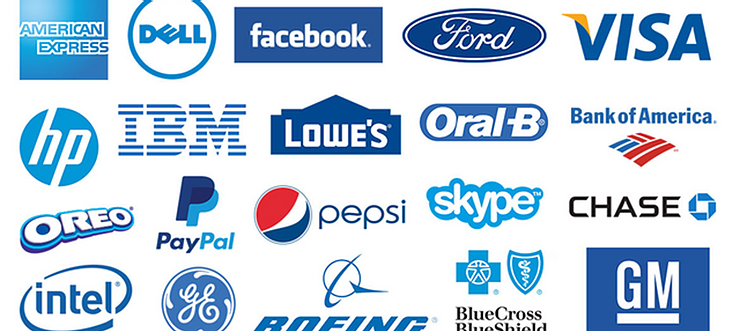

Ans: Make your brand's image familiar to the audiences.

Familiarity principle is the tendency of humans to have a better
preference for the things that they are more familiar with.
I saw an interesting real-life story that can explain it better:
"my[author's] dog was scared of the hoover the first time it came out,
and he refused to leave the house when it snowed in his first winter
with us. "
It is an example that most of the animals fear or try to hide/run away
from unfamiliar things, but tends to overcome the fear if it becomes
regular/familiar as time passes by.
Just like this analogy, when it comes to consumer behaviour, people tend
to "trust" products which they have seen before more than a new product
with zero familiarity, even if the new product may be of higher quality.
How can businesses achieve this?
By portraying a consistent personality for their brands through whatever
elements the brand uses to communicate to the audiences. It might be
Logos, fonts, Tone of voice, colour palette, the images that the brand
uses etc..
Having a long term strategy and consistently communicating the same with
your audiences is what makes an organisation a brand.
Article originally published
here
.


 +91 77366 95526
+91 77366 95526
 info@blusteak.com
info@blusteak.com